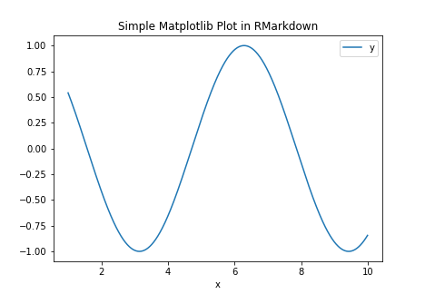
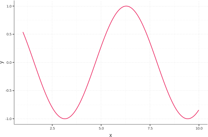

vignettes/articles/21_python_rmarkdown.Rmd
21_python_rmarkdown.RmdThe MPIThems templates aren’t just for R users, Python programmers may also enjoy them by reticulate package. The reticulate brings a Python engine for R Markdown and allowing simple interchange between Python and R chunks. For install reticulte use cran repository as below:
install.packages("reticulate")The first step to running Python code is to choose the Python engine or environment. There are two ways to choose a Python environment:
reticulate uses the system Python found on your OS. To find the path, run the R command Sys.which("python") on the console. Alternatively, to use your installed Python, add your Python path with the command use_python() to set the default engine.
library(reticulate)
use_python("/usr/local/bin/python")Anaconda or Miniconda, you may use the use use_condaenv() or use use_virtualenv() to run Python code in any of these environments.
use_condaenv("Python3.8", required = TRUE) # Name of environmentThe r-reticulate Conda environment will be created when the reticulate package is installed. To see the list of your Conda environment, run command conda list env in bash or retculate::conda_list() R command. Run the py_config() command to ensure that reticulate is utilizing your updated Conda env.
The reticulate env has minimal Python packages. In order to install a new package, use py_install() command. The packages will be installed by default in r-reticulate env. For more information you can see reticulate’s vignette Installing Python Packages
py_install("pandas")To ensure that everything is working properly, try writing a basic Python code in RMarkdown. Set the Python command in the Python chunk {python} for this.
'''{python}
import numpy as np
import pandas as pd
np.arange(1, 10)
'''For the convenience of Python coding in RMarkdown, it is recommended that you create a shortcut to generate the python chunks. To create shortcut go to Tools -> Modify Keyboard Shortcuts and search python word to find Insert Chunk Python. Then click on it and set a suitable shortcut for it. Ctrl + Alt + P sounds a good option.
In the following example, we use the pandas package to construct a data frame and matplolib to plot the data.
import matplotlib as plt
df = pd.DataFrame(data = {"x":np.arange(1,10,.01)})
df = df.assign(y=np.cos(df["x"]))
df.plot(x="x", y = "y", title = "Simple Matplotlib Plot in RMarkdown")
Fortunately, Package ggplot2 has also been implemented for Python. Below is an example of drawing a ggplot in Python.
from plotnine.data import economics
from plotnine import ggplot, aes, geom_line
ggplot(df) + aes(x="x", y="y") + geom_line()